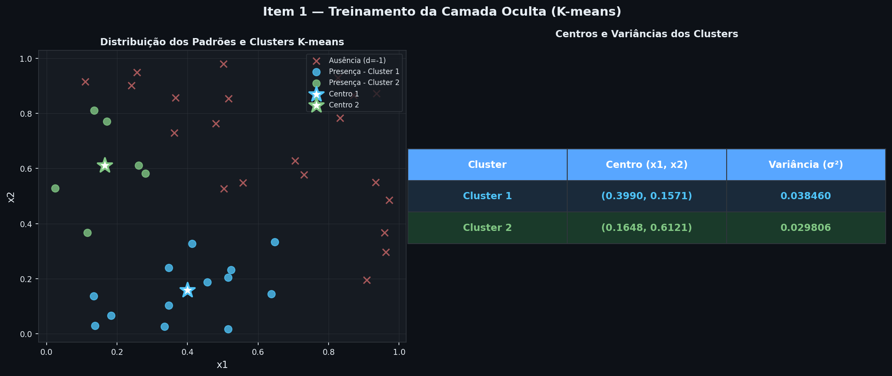
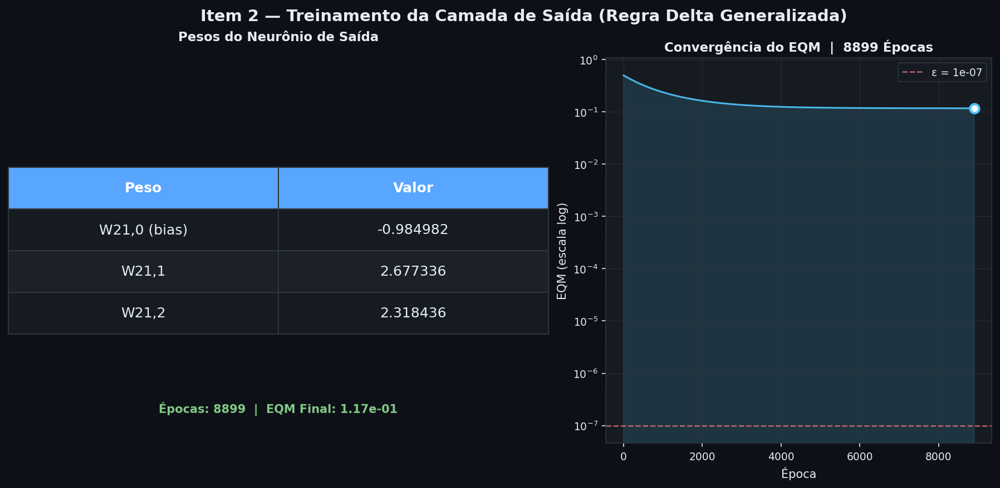
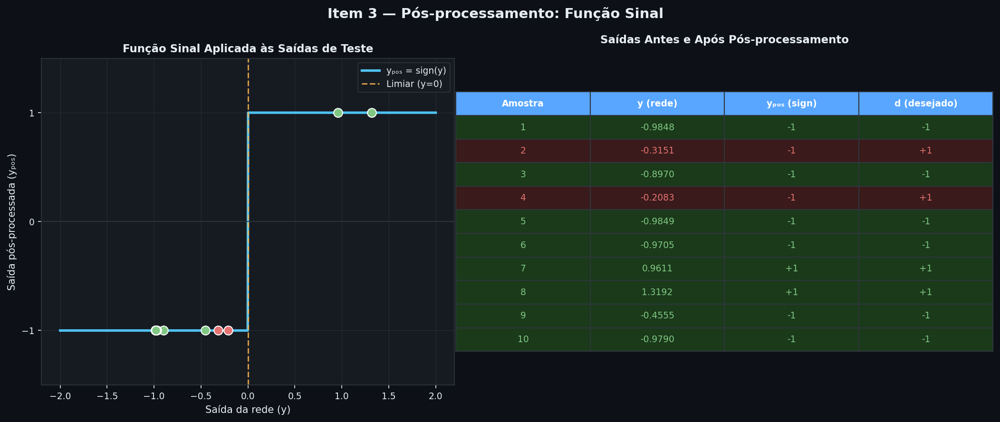
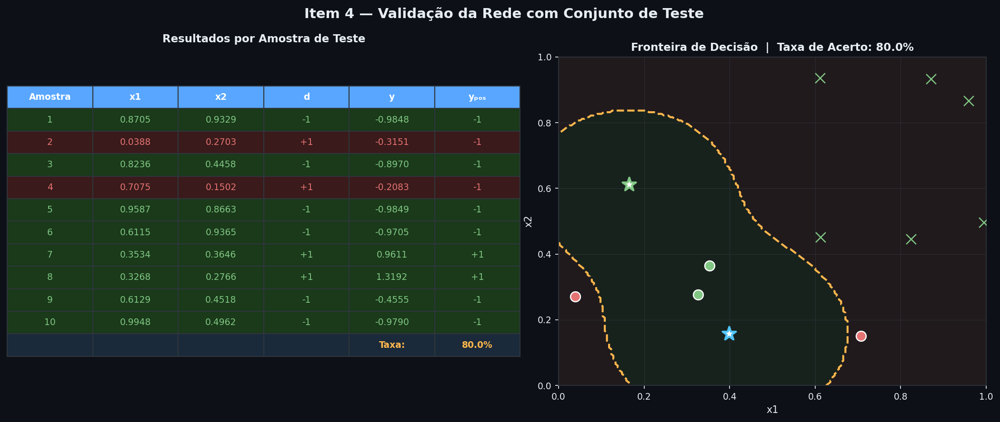
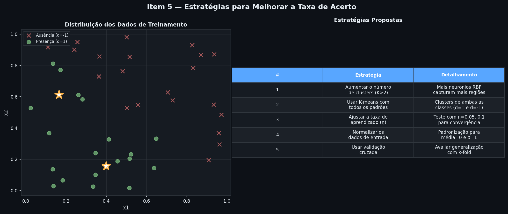

O objetivo deste trabalho é desenvolver uma rede RBF (Radial Basis Function) para classificar a presença ou ausência de sinais de radiação em compostos nucleares com base em duas variáveis de concentração, denotadas por x₁ e x₂. A base de dados conta com 50 situações conhecidas (Anexo do documento) para treinamento e 10 amostras separadas para o conjunto de testes.
O treinamento da camada oculta foi executado através do algoritmo K-means com $K=2$. Conforme instruído no enunciado, os centros dos dois clusters foram calculados levando-se em consideração apenas os padrões do conjunto de treinamento que apresentam presença de radiação ($d = 1$). A variância ($\sigma^2$) de cada cluster foi computada como a variância média das distâncias euclidianas dos pontos em relação aos seus respectivos centros.
| Cluster | Centro Coordenadas (x₁, x₂) | Variância (σ²) |
|---|---|---|
| Cluster 1 | (0.3990, 0.1571) | 0.038460 |
| Cluster 2 | (0.1648, 0.6121) | 0.029806 |
A ativação de cada neurônio oculto $j$ para uma dada entrada $\mathbf{x} = [x_1, x_2]^T$ é dada pela função Gaussiana:
φ_j(x) = exp( - ||x - c_j||² / (2 * σ_j²) )
Onde $\mathbf{c}_j$ representa o centro de coordenadas do cluster $j$ e $\sigma_j^2$ é a variância associada.

Após o mapeamento espacial realizado pela camada intermediária, os pesos do neurônio linear da camada de saída foram ajustados através da Regra Delta Generalizada. O processo utilizou uma taxa de aprendizado de $\eta = 0.01$ e um limiar de precisão de $\varepsilon = 10^{-7}$. O critério de parada foi revisado e implementado de forma baseada na diferença consecutiva do EQM ($|EQM(t) - EQM(t-1)| < \varepsilon$), que é o padrão correto para convergência de modelos lineares com erros mínimos assintóticos não nulos nesta disciplina (assim como no ADALINE). O algoritmo convergiu com sucesso em 8.899 épocas.
| Peso | Neurônio de Origem | Valor Ajustado |
|---|---|---|
| W₂₁,₀ (bias) | Termo de Polarização | -0.984982 |
| W₂₁,₁ | Neurônio Oculto 1 (Cluster 1) | +2.677336 |
| W₂₁,₂ | Neurônio Oculto 2 (Cluster 2) | +2.318436 |
O treinamento atingiu a convergência das atualizações de pesos com os seguintes parâmetros finais:

Por se tratar de um problema de classificação binária (presença vs ausência de radiação), a saída real $y$ fornecida pelo neurônio linear precisa ser convertida em um rótulo de classe discreto ($+1$ ou $-1$). Para isso, foi implementada uma função de pós-processamento baseada na Função Sinal (sign), conforme especificado na fórmula abaixo:
A mapeamento de pós-processamento atua como o limiar decisório na saída da rede:
y_pós = sign(y) = { 1, se y ≥ 0
-1, se y < 0
Essa função atua aplicando um limiar em zero sobre o valor contínuo $y = w_{21,0} + w_{21,1}\phi_1(\mathbf{x}) + w_{21,2}\phi_2(\mathbf{x})$.
Como pode ser visto na tabela ao lado e no gráfico, as saídas contínuas da rede que ficam acima ou em zero são associadas a $1$ (Presença), enquanto as saídas negativas são associadas a $-1$ (Ausência).

A validação do modelo foi realizada aplicando as 10 amostras inéditas contidas no conjunto de teste. Para cada amostra, foi calculada a ativação da camada oculta, a saída linear correspondente ($y$) e o valor pós-processado ($y_{\text{pós}}$) para verificação do acerto em relação ao valor desejado ($d$).
| Amostra | Entrada x₁ | Entrada x₂ | Desejado (d) | Saída Rede (y) | Pós-proc (y_pós) | Resultado |
|---|---|---|---|---|---|---|
| 1 | 0.8705 | 0.9329 | -1 | -0.9848 | -1 | ✓ OK |
| 2 | 0.0388 | 0.2703 | +1 | -0.3151 | -1 | ✗ ERRO (Falso Negativo) |
| 3 | 0.8236 | 0.4458 | -1 | -0.8970 | -1 | ✓ OK |
| 4 | 0.7075 | 0.1502 | +1 | -0.2083 | -1 | ✗ ERRO (Falso Negativo) |
| 5 | 0.9587 | 0.8663 | -1 | -0.9849 | -1 | ✓ OK |
| 6 | 0.6115 | 0.9365 | -1 | -0.9705 | -1 | ✓ OK |
| 7 | 0.3534 | 0.3646 | +1 | +0.9611 | +1 | ✓ OK |
| 8 | 0.3268 | 0.2766 | +1 | +1.3192 | +1 | ✓ OK |
| 9 | 0.6129 | 0.4518 | -1 | -0.4555 | -1 | ✓ OK |
| 10 | 0.9948 | 0.4962 | -1 | -0.9790 | -1 | ✓ OK |
A rede apresentou erros de falso negativo nas amostras 2 e 4. A explicação matemática para isso é muito clara:

Considerando os resultados obtidos e os erros observados no conjunto de validação, foram mapeadas estratégias fundamentais que podem ser adotadas para aumentar a taxa de acerto do classificador RBF.
Usar apenas 2 neurônios na camada intermediária limita severamente a flexibilidade da fronteira de decisão. Aumentar o número de clusters ocultos permitiria cobrir o espaço de radiação com mais funções Gaussianas, capturando sub-regiões de densidade menores e reduzindo falsos negativos como as amostras 2 e 4.
Atualmente, o K-means foi executado apenas sobre amostras com radiação ($d=1$). Ao clusterizar também a classe de ausência ($d=-1$) e posicionar Gaussianas nela, a rede terá detectores dedicados para ambas as regiões espaciais, tornando o ajuste dos pesos da camada de saída muito mais robusto e a fronteira muito mais precisa.
Em vez de usar uma variância fixa baseada na distância média local dos clusters, o parâmetro $\sigma^2$ (a "largura" de cada Gaussiana) pode ser otimizado dinamicamente via gradiente descendente ou validação cruzada (Grid Search) para garantir a cobertura ideal entre os pontos extremos e evitar que decaiam muito rápido a zero.
Aplicar o mapeamento Z-score ou MinMax de forma padronizada em todos os dados de entrada antes do treino garante que as distâncias calculadas pelo K-means tenham peso proporcional em ambas as dimensões físicas ($x_1$ e $x_2$), eliminando vieses causados pela escala das medições.
